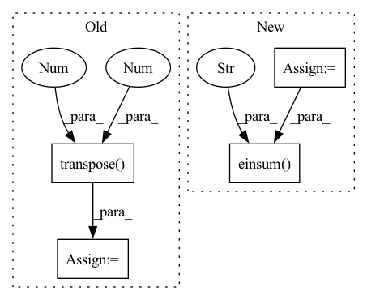

Pattern ID :29971

Before Change
f = fun(p)
j = jac_fun(p)
g = torch.bmm(j.transpose(-2, -1), f[..., None])[..., 0]
H = torch.bmm(j.transpose(-2, -1), j)
p_list = [p]
while len(p_list) < max_iter:
h = -l*torch.linalg.lstsq(H, g, rcond=None, driver=None)[0]//-l*torch.bmm(torch.pinverse(H), g)[..., 0]//
After Change
// compute gradient and Hessian costs
gc = torch.einsum("bcnp,bcnp->bcp", j, f[..., None])
Hc = torch.einsum("bcnp,bcni->bcpi", j, j)
// reduce multiple costs dimension through weighting
g = torch.einsum("bcp,c->bp", gc, wvec)
H = torch.einsum("bcpi,c->bpi", Hc, wvec)
p_list = []
while len(p_list) < max_iter:
h = -l*torch.linalg.lstsq(H, g, rcond=None, driver=None)[0]
p = p + h
p_list.append(p.detach())
f_prev = f.clone()
f = fun(p)
j = jac_fun(p)
gc = torch.einsum("bcnp,bcnp->bcp", j, f[..., None])
Hc = torch.einsum("bcnp,bcni->bcpi", j, j)
g = torch.einsum("bcp,c->bp", gc, wvec)
H = torch.einsum("bcpi,c->bpi", Hc, wvec)
// stop conditions
gcon = torch.max(abs(g)) < gtol
In pattern: SUPERPATTERN
Frequency: 3
Non-data size: 4
Instances
Fragment ID: 88940877
Project Name: hahnec/torchimize
Commit Name: 71d4a553c258e912862f87311fc88cd5cadb49d1
Time: 2022-05-16
Author: christopher.hahne@unibe.ch
File Name: torchimize/functions/gna_fun_parallel.py
M Class Name: AnonimousClass
N Class Name: AnonimousClass
M Method Name: lsq_gna_parallel(10)
N Method Name: lsq_gna_parallel(9)
M Parent Class:
N Parent Class:
M File Name: torchimize/functions/gna_fun_parallel.py
N File Name: torchimize/functions/gna_fun_parallel.py
M Start Line: 43
M End Line: 56
N Start Line: 12
N End Line: 73
'>
Before Change
F, _, KL = weight.shape
_, _, OL = grad_output.shape
grad_out_reshaped = grad_output.data.transpose(1, 2, 0).reshape(F, -1)
grad_weight = (grad_out_reshaped @ x_cols.T).reshape(weight.shape)
grad_x_cols = weight.data.reshape(F, -1).T @ grad_out_reshaped
grad_x_cols.shape = (C, KL, N, OL)
grad_x = col2im(grad_x_cols, x.shape, 1, KL, 0, stride)
After Change
grad_x = np.zeros((batch_size, in_channel, signal_length), dtype=grad_output.dtype)
for k in range(output_length):
X = k % output_length
iX = X * stride
grad_x[:, :, iX:iX+kernel_length] += np.einsum("ik, kjy->ijy", grad_output[:, :, X], weight)
grad_x = grad_x.reshape((batch_size, in_channel, signal_length))
return grad_x, grad_weight
'>
Fragment ID: 88940814
Project Name: pabannier/nanograd
Commit Name: 442722b1830cdbf5fe8874edf3ecce602b3e9526
Time: 2021-02-02
Author: pierreantoine.bannier@gmail.com
File Name: nanograd/nn/ops_cpu.py
M Class Name: AnonimousClass
N Class Name: AnonimousClass
M Method Name: conv1d_backward(5)
N Method Name: conv1d_backward(5)
M Parent Class:
N Parent Class:
M File Name: nanograd/nn/ops_cpu.py
N File Name: nanograd/nn/ops_cpu.py
M Start Line: 224
M End Line: 234
N Start Line: 224
N End Line: 239
'>
Before Change
selected_values = expanded_values.gather(-2, expanded_indices)
out = (attn.unsqueeze(-1) * selected_values).sum(dim=-2)
out = out.transpose(1, 2).reshape(b, t, -1)
return self.to_out(out)
After Change
b, t, e, h = *x.shape, self.heads
queries = self.to_queries(x)
queries = self.batch_norm(queries.transpose(1, 2)).transpose(1, 2)
queries = queries.chunk(2, dim=-1)
queries = torch.stack(queries).reshape(2, b, t, h, -1)
dots = torch.einsum("pbthd,hnpd->bthpn", queries, self.keys)
scores, indices = dots.topk(k=self.topk, dim=-1)
scores, indices = map(lambda x: x.chunk(2, dim=2), (scores, indices))
all_topk = self.topk ** 2
'>
Fragment ID: 88940871
Project Name: lucidrains/product-key-memory
Commit Name: 915dd922ef8e168f7970d5336d0ba79b4f57fe47
Time: 2020-06-06
Author: lucidrains@gmail.com
File Name: product_key_memory/product_key_memory.py
M Class Name: PKM
N Class Name: PKM
M Method Name: forward(2)
N Method Name: forward(2)
M Parent Class: nn.Module
N Parent Class: nn.Module
M File Name: product_key_memory/product_key_memory.py
N File Name: product_key_memory/product_key_memory.py
M Start Line: 36
M End Line: 71
N Start Line: 35
N End Line: 64